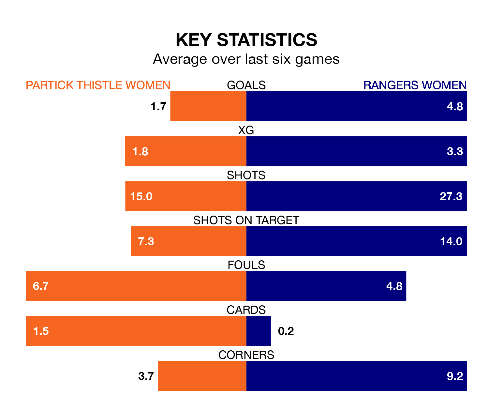

Rangers Women visit Partick Thistle Women at Petershill Park on Sunday lunchtime on the back of 15 consecutive wins in SWPL 1.
It means Rangers have picked up the maximum 45 points from their last 15 games, and they face a Thistle side who have also won their last three matches, and collected 27 points from the last possible 45.
Rangers are top of the table after 19 games, of which they have won 18 and drawn one, earning 55 points.
Partick Thistle are four places behind the away side in fifth, with 12 wins and seven losses putting them on 36 points.
With 88 goals in 19 games so far this season, Rangers are the league's second-highest scorers with 4.6 goals per game. And they are conceding fewer than average, letting in nine goals at a rate of 0.5 per game.
Thistle, meanwhile, are below average scorers, with 1.7 goals per game, compared to a league average of 2.2. They have conceded 1.5 goals per game.
With Jenna Fife between the sticks, Rangers can rely on one of the league's safest pair of hands. She has kept eight clean sheets in her 15 appearances this season, and only one other 'keeper – Celtic Women's Kelsey Daugherty – has been able to prevent the opposition scoring on more occasions in SWPL 1.
In the hosts' net, Megan Cunningham has five clean sheets in 12 games. She has conceded a goal every 53 minutes, four times as often as the 193 minutes between goals for Fife.
In the last 10 years, Partick Thistle and Rangers have played each other on eight occasions. Rangers won all of them.
On average, Thistle scored 0.2 goals and Rangers 4.2 in those matches.
Their last meeting was on September 3, when Rangers won 1-0 at home.
Partick Thistle's last match was on Wednesday, a 1-0 win against Spartans Women, with Carla Boyce getting the goal for Thistle.
Rangers beat Hearts Women 1-0 last time out, also on Wednesday, with Jane Ross on the scoresheet.
Updated: 11:18 (UTC), 08/02/24